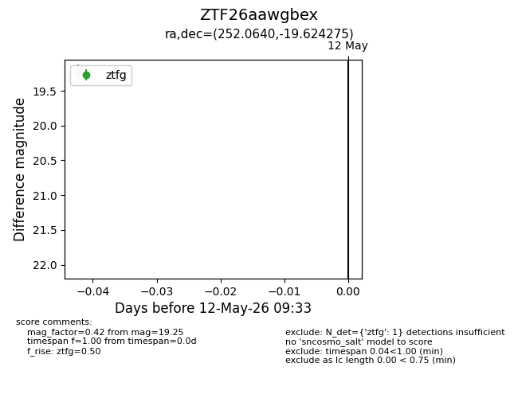
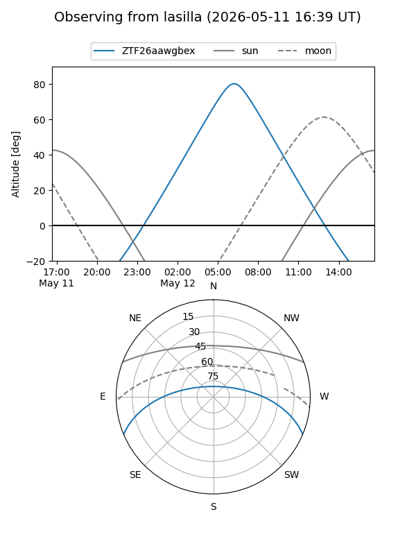
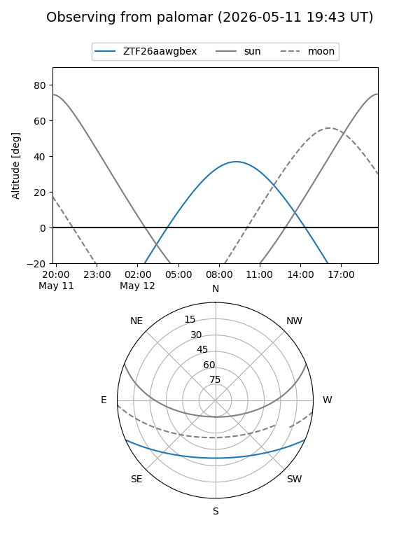

ZTF26aawgbex
Target ZTF26aawgbex at 2026-05-12 09:35
Aliases and brokers:
FINK: link
Lasair: link
ALeRCE: link
alt names
ZTF26aawgbex (ztf,fink_ztf)
Coordinates:
equatorial (ra, dec) = 252.0640,-19.62427
equatorial (HMS+DMS) = 16:48:15.35,-19:37:27.39
galactic (l, b) = (0.2641,+16.02419)
Flags:
Photometry:
last ztfg=19.25
1 ztfg detections
Lightcurve

Visibility


Additional plots